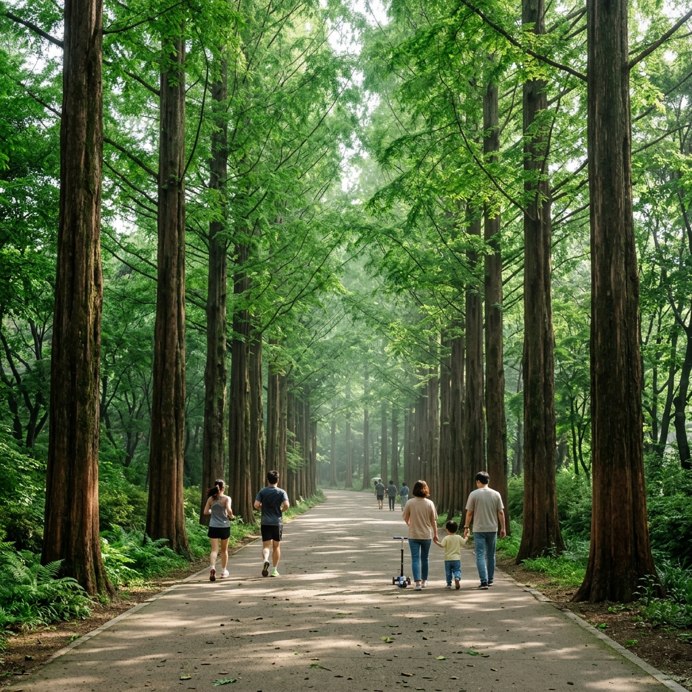
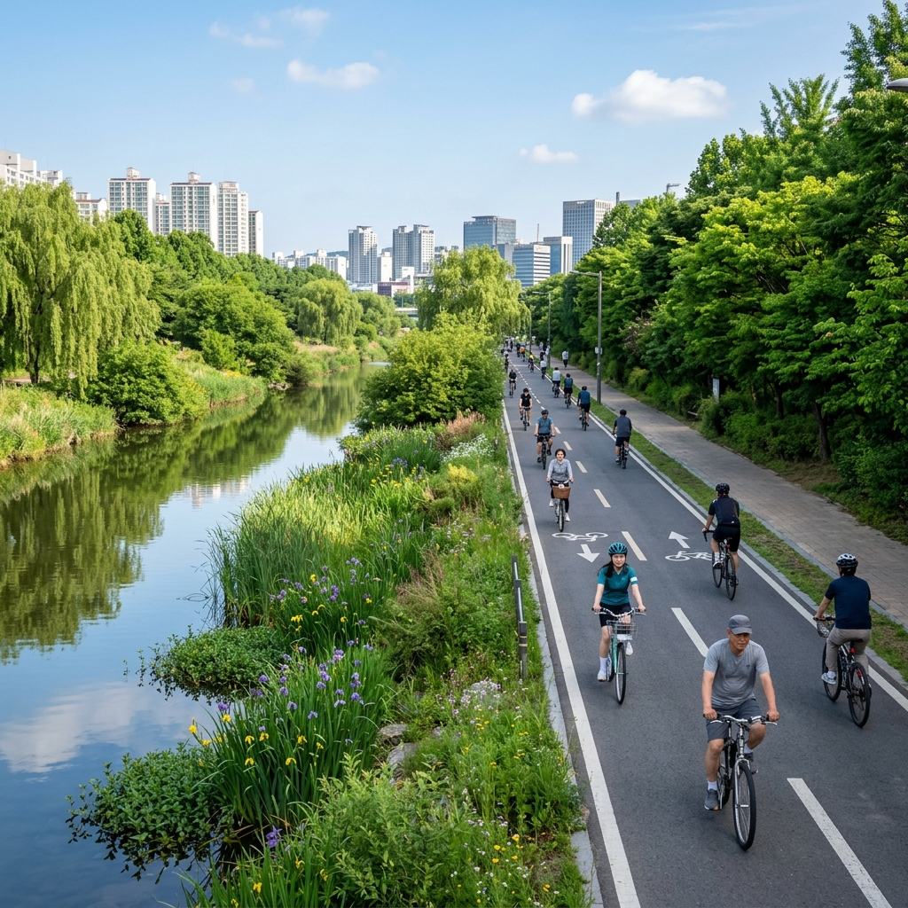
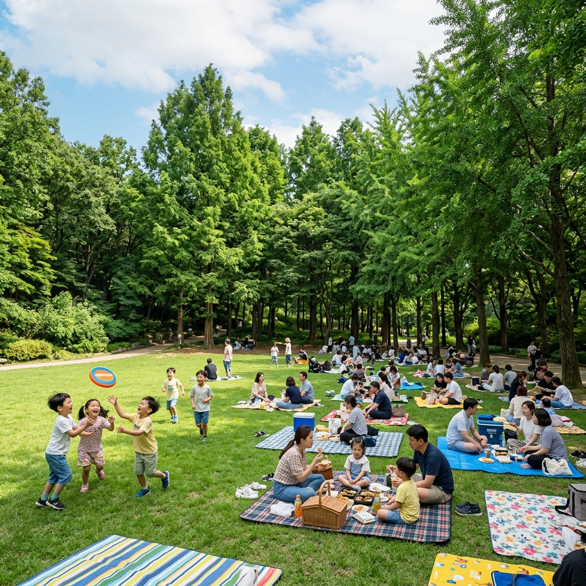

양재시민의숲 메타세콰이어 6월 신록 산책
양재천 자전거 연계 코스와 주차 팁
서울 도심에서 40분 이내에 이런 숲이 있다는 사실이 반갑습니다.
양재시민의숲은 강남구 양재동에 위치한 23만㎡ 규모의 도시 숲으로, 서울 도심에서 접근하기 가장 편리한 대형 자연 공간 중 하나입니다. 이 숲의 핵심은 단연 메타세콰이어 군락입니다. 수십 년 수령의 메타세콰이어 나무들이 하늘을 향해 곧게 뻗은 모습은, 6월이면 짙은 초록빛 캐노피를 형성해 서울 어디에서도 보기 어려운 '삼림욕 명소'를 만들어 냅니다.
양재시민의숲과 바로 이어지는 양재천 자전거 길은 강남·서초 구간을 동서로 가로지르는 13km 자전거 전용도로입니다. 공원에서 자전거를 빌려 양재천을 따라 달리고, 다시 숲으로 돌아와 산책하는 코스는 하루 나들이로 완벽한 조합입니다.
6월에 방문하는 이유가 있습니다. 메타세콰이어는 6월 중순에 신록이 절정을 이루며, 이른 아침 안개가 낄 때나 비 온 직후에는 숲 전체가 수증기와 초록빛으로 뒤덮여 마치 동화 속 숲 같은 분위기를 연출합니다. 한여름 무더위가 본격적으로 시작되기 전, 6월까지가 야외 산책의 최적 시기입니다.
| 항목 | 내용 |
|---|
| 위치 | 서울특별시 서초구 양재동 양재시민의숲 (매헌로 99) |
| 지하철 | 3호선 양재역 8번 출구 도보 5분 / 신분당선 양재역 공용 |
| 주차 | 양재시민의숲 공영주차장 운영 (주말 혼잡, 08:00~22:00) |
| 입장료 | 무료 (자전거 대여소 별도 요금) |
| 추천 소요 시간 | 숲 산책 1~1.5시간 + 양재천 자전거 1~2시간 |
| 최적 방문 시기 | 5월 말~6월 중순 (메타세콰이어 신록 절정) |
| 운영 시간 | 연중 상시 개방 (야간 조명 22:00까지) |
1. 양재시민의숲이란 어떤 곳인가 — 도심 속 23만㎡ 생태 녹지
양재시민의숲은 1986년 아시안게임과 1988년 서울올림픽을 앞두고 서울시가 조성한 대규모 도시 공원입니다.
공원 설계 당시 가장 중점을 둔 것은 '시민이 실제로 쉬고 걸을 수 있는 숲'을 만드는 것이었습니다. 그 결과 관상용 화단보다는 수목 자체의 자연스러운 군락을 최대한 살린 공간 구성이 이루어졌고, 개원 이후 40년 가까이 지나면서 나무들이 성숙해져 지금처럼 울창한 숲의 모습을 갖추게 되었습니다.
공원 내 수종은 메타세콰이어를 중심으로 은행나무·소나무·자작나무·느티나무 등 다양한 활엽수와 침엽수가 혼재합니다. 계절마다 다른 모습을 보여 주는 이유가 바로 이 다양한 수종 구성에 있습니다. 봄에는 벚꽃과 목련이, 여름에는 메타세콰이어 신록이, 가을에는 은행나무 단풍이, 겨울에는 소나무의 상록이 공원을 채웁니다.
특히 주목할 만한 것은 공원 서쪽 구역의 윤봉길 의사 동상과 기념관입니다. 독립운동가 윤봉길 의사가 일제강점기 상하이 홍커우 공원에서 의거를 일으킨 1932년을 기념하여 동상과 기념 공간이 조성되어 있습니다. 숲 산책과 역사 교육을 동시에 즐길 수 있어 가족 단위 방문에 특히 적합한 공간입니다.
2. 찾아가는 법 — 지하철과 버스 최적 동선
양재시민의숲은 서울 지하철망과 직결되어 있어 접근이 매우 편리합니다.
지하철 이용 시 수도권 지하철 3호선과 신분당선이 환승되는 양재역에서 내립니다. 8번 출구로 나오면 양재시민의숲 방향 도보 안내판이 바로 보이며, 직진 5분이면 공원 정문에 닿습니다. 강남·교대·서초 방면에서는 3호선, 판교·강남·신사 방면에서는 신분당선을 이용하면 됩니다. 두 노선 모두 양재역에서 공용이므로 어느 노선이든 동일한 출구를 이용할 수 있습니다.
버스 이용 시 강남대로나 양재대로를 달리는 간선버스들이 양재시민의숲 정류장에 정차합니다. 서울 각지에서 양재대로 방향으로 환승 없이 접근 가능한 노선이 다수 있어, 지하철 연결이 불편한 지역에서 오시는 분들에게도 쉽게 닿는 곳입니다.
자가용 이용 시 공원 북쪽의 양재시민의숲 공영주차장(오전 8시~오후 10시 운영)을 이용할 수 있습니다. 평일에는 여유가 있지만 주말 오전 10시 이후에는 만차가 될 수 있습니다. 주차 요금은 시간당 800~1,000원 수준이며, 2시간 이상 주차 시 할인이 적용됩니다. 단, 자전거를 이용한 양재천 코스를 병행할 경우 대중교통 방문 후 공원 내 자전거 대여소를 활용하는 편이 훨씬 편리합니다.

양재시민의숲 메타세콰이어 숲길 — 6월 신록 절정기의 초록 터널 / AI 제작 이미지
3. 메타세콰이어 숲길 — 6월 신록이 절정을 이루는 핵심 구간
양재시민의숲을 방문하는 가장 큰 이유는 역시 메타세콰이어 군락입니다.
메타세콰이어(Metasequoia glyptostroboides)는 중국 원산의 낙엽 침엽수로, 빠른 성장 속도와 곧게 솟는 수형이 특징입니다. 1980년대 조성 당시 심어진 나무들이 지금은 높이 30m 이상으로 자라, 공원을 걷는 사람들이 나무 기둥들 사이를 거닐며 '숲 안에 있는' 느낌을 온전히 받을 수 있습니다.
6월에는 메타세콰이어의 잎이 가장 짙고 풍성해지는 시기입니다. 5월까지 연초록이었던 잎이 6월 중순이 되면 진한 에메랄드빛을 띠며 캐노피 전체를 빽빽하게 채웁니다. 이 시기에 나무 아래를 걸으면 한낮에도 시원한 그늘이 형성되어 기온이 외부보다 3~5도 낮게 느껴집니다. 실제로 여름 도심 열섬 현상이 심해지는 7~8월에는 이 숲이 자연 에어컨 역할을 한다는 조사 결과도 있습니다.
메타세콰이어 구간은 공원 정문에서 직진해 약 200m 진입하면 시작됩니다. 좌우로 줄지어 선 나무들이 하늘을 가리는 구간이 약 300m 이어지며, 이 구간을 왕복하는 것만으로도 산림욕 효과를 충분히 누릴 수 있습니다. 이른 아침 방문하면 나무 사이로 빛이 기울게 들어오는 '신의 빛(God's Ray)' 현상이 연출되어 사진 촬영에도 최적입니다.
4. 양재천 자전거 코스 연계 — 13km 전용 도로 완전 가이드
양재시민의숲 바로 옆으로 흐르는 양재천은 13km 자전거 전용도로가 갖추어진 서울 내 대표적인 수변 라이딩 코스입니다.
양재천 자전거 길의 시작점은 공원 서쪽 자전거 대여소에서 출발해 동쪽 방향(서초구청 → 강남구 개포동 방향)으로 이어지거나, 서쪽 방향(과천 방면)으로 이어집니다. 총 13km를 왕복하면 약 2시간 30분~3시간이 걸리는 코스이므로, 시간이 부족하다면 한 방향으로 4~5km 달리고 되돌아오는 편도 방식으로 즐겨도 충분합니다.
자전거 대여는 공원 내 자전거 대여소에서 가능합니다. 일반 자전거와 전기자전거 모두 시간제 대여가 가능하며, 헬멧도 포함하여 대여해 줍니다. 서울시 따릉이 스테이션도 공원 인근에 여러 곳 운영 중이므로, 따릉이 앱으로 미리 대여해서 오는 것도 좋은 방법입니다.
양재천 라이딩 코스의 특징은 차도와 완전히 분리된 전용 도로라 안전하고, 하천 수변 식생이 계절마다 달라져 사계절 내내 풍경이 변한다는 점입니다. 6월에는 양재천 수변에 창포·갈대·물억새 등의 수생 식물이 우거져 자전거를 타면서 수변 생태를 관찰하는 즐거움이 있습니다.

양재천 자전거 전용 도로 — 6월 수변 식생이 우거진 13km 코스 / AI 제작 이미지
5. 공원 내 구역별 산책로 — 메타세콰이어 외 숨겨진 볼거리
양재시민의숲은 메타세콰이어 구간 외에도 다양한 특색의 구역이 있어 한 바퀴 도는 재미가 있습니다.
야생화 단지: 공원 동쪽 구역에 조성된 야생화 단지는 계절 야생화와 습지 식물들이 자연에 가까운 상태로 관리됩니다. 6월에는 붓꽃·원추리·패랭이꽃 등의 여름 야생화가 피기 시작해 소박하지만 아름다운 꽃밭을 이룹니다. 인파가 몰리는 메타세콰이어 구간에 비해 이곳은 비교적 조용해, 사진보다는 여유로운 감상에 어울리는 공간입니다.
자작나무 숲: 공원 북쪽 일부 구역에는 하얀 수피가 특징인 자작나무들이 군락을 이루는 공간이 있습니다. 메타세콰이어와는 완전히 다른 분위기로, 밝고 서늘한 청량감이 느껴집니다. 이른 아침 안개가 낄 때 자작나무 숲을 찾으면 북유럽 숲 같은 신비로운 분위기가 연출됩니다.
잔디광장: 공원 중앙에는 대규모 잔디광장이 펼쳐져 있습니다. 돗자리를 펼치고 피크닉을 즐기는 가족들이 늘 자리를 잡고 있으며, 간단한 배드민턴이나 프리스비를 즐기기에도 적합합니다. 그늘이 없는 구간이라 한여름에는 뜨거울 수 있으므로, 6월까지의 봄·초여름 기간에 활용하는 것이 좋습니다.
6. 피크닉 명당과 쉬어가기 좋은 공간
양재시민의숲은 서울에서 피크닉 장소로 가장 추천받는 공원 중 하나입니다.
최고의 피크닉 자리는 메타세콰이어 숲과 잔디광장 경계 구역입니다. 이곳은 메타세콰이어 나무들이 드리우는 그늘과 개방된 잔디의 조합이 이상적이어서, 직사광선을 피하면서도 답답하지 않은 공간을 즐길 수 있습니다. 주말 오전 10시 이전에 도착하면 좋은 자리를 잡을 수 있습니다.
공원 내 쉼터 벤치는 수백 개가 설치되어 있으며, 산책로 곳곳에 음수대와 공중화장실이 있어 편의 시설이 충분합니다. 특히 윤봉길 의사 기념관 주변 벤치 구역은 나무 그늘이 좋아 더위를 피하며 쉬기에 좋습니다.
피크닉 도시락을 준비해 오시려면 인근 서초구청역 방향의 편의점이나 양재동 먹거리 골목에서 미리 구입하는 것이 좋습니다. 공원 내부에는 자판기와 작은 간이 매점이 있지만 선택지가 제한적이므로, 충분한 음료와 간식을 지참해 오시기를 권장합니다.
7. 주변 먹거리와 카페 가이드 — 산책 후 한 끼
양재시민의숲 방문 후 허기를 채울 공간은 공원 주변에 여럿 있습니다.
공원 동쪽 출구 방향으로 5~10분 걸으면 양재동 먹거리 골목이 나옵니다. 이 골목에는 직장인들이 즐겨 찾는 한식 백반집과 국밥집들이 밀집해 있으며, 가격 대비 양이 넉넉하고 맛이 검증된 식당들이 많습니다. 점심 기준 1만 원 안팎으로 든든한 한 끼를 해결할 수 있습니다.
카페를 찾는다면 양재역 8번 출구 방향 도로변에 여러 카페가 들어서 있습니다. 스페셜티 원두를 사용하는 독립 카페부터 대형 프랜차이즈까지 취향에 맞게 선택할 수 있으며, 일부 카페는 공원에서 가져온 자전거를 세워 두고 들어갈 수 있는 야외 공간을 운영합니다.
자전거 코스까지 함께 즐긴 뒤에는 양재천 수변 산책로 주변의 소규모 카페들도 찾아볼 만합니다. 하천 바로 옆에 위치해 개방감이 좋고, 테라스 좌석에서 양재천 풍경을 보며 음료를 즐기는 경험이 특별합니다.

양재시민의숲 잔디광장 피크닉 — 메타세콰이어 그늘 아래 여유로운 6월의 하루 / AI 제작 이미지
8. 숲의 사계절 — 6월을 특별히 추천하는 이유
양재시민의숲은 사계절 모두 매력이 있지만, 6월을 특별히 추천하는 이유가 있습니다.
4월: 벚꽃 시즌에 공원 내 벚나무들이 분홍빛으로 물들지만, 이 시기에는 인파가 집중됩니다. 메타세콰이어는 아직 잎이 나오기 전이라 수형 자체를 감상하는 묘미가 있습니다.
5월: 메타세콰이어가 연초록 새잎을 내기 시작합니다. 야생화도 다양하게 피어나고 기온도 쾌적해 산책하기에 최적인 달입니다. 다만 메타세콰이어의 잎이 아직 풍성하지 않아 6월 신록만큼의 밀도는 아닙니다.
6월: 메타세콰이어 잎이 가장 짙고 빽빽한 시기입니다. 숲 안을 걸으면 외부보다 체감 온도가 확연히 낮아지고, 새소리와 바람 소리만 들리는 '도심 속 별천지'를 경험할 수 있습니다. 여름 장마가 시작되기 전 마지막 편안한 야외 산책 시즌이기도 합니다.
10~11월: 메타세콰이어가 붉게 물드는 단풍 시즌이 두 번째 절정입니다. 은행나무 단풍까지 더해져 노란빛과 붉은빛이 공존하는 가을 풍경은 6월의 초록과는 또 다른 매력입니다.
9. 방문 전 꼭 알아야 할 팁 — 주차·베스트 타이밍·준비물
양재시민의숲을 더욱 알차게 즐기기 위한 실전 정보를 안내합니다.
주차: 공원 북쪽 양재시민의숲 공영주차장을 이용할 수 있습니다. 평일은 여유 있지만 주말 오전 11시 이후에는 혼잡합니다. 자전거 코스를 병행할 계획이라면 대중교통(양재역)으로 오는 것이 훨씬 편리합니다.
최적 방문 시간: 이른 아침 7~9시 방문을 추천합니다. 새벽 이슬이 남아 있고 인파가 적어 숲 본연의 분위기를 온전히 느낄 수 있습니다. 빛도 사선으로 들어와 사진도 잘 나옵니다. 주말 오전 10시 이후에는 가족 단위 방문객이 크게 늘어 인기 구간이 붐빕니다.
준비물: 6월이라도 아침에는 서늘할 수 있으므로 얇은 겉옷을 챙기세요. 자전거를 탈 계획이라면 운동화 필수입니다. 사진 촬영 목적이라면 스마트폰 자동 인물 사진 모드나 어안 렌즈 어댑터를 활용하면 메타세콰이어 수형을 더 드라마틱하게 담을 수 있습니다.
공원 내 반려동물: 목줄 착용 조건으로 반려동물 동반이 가능합니다. 다만 주말에는 인파가 많아 반려동물이 스트레스를 받을 수 있으니 평일 방문을 권장합니다.
💡 하루 코스 제안 (4~5시간)
양재역 도착 → 메타세콰이어 숲길 산책 40분 → 야생화 단지·자작나무숲 탐방 30분 → 잔디광장 피크닉 60분 → 양재천 자전거 대여 후 편도 4km 라이딩 60분 → 귀환 후 카페 30분
#양재시민의숲
#메타세콰이어
#양재천자전거
#서울숲산책
#강남산책코스
#서울도시숲
#6월산책명소
#서울피크닉
#양재역맛집
#서울숲길